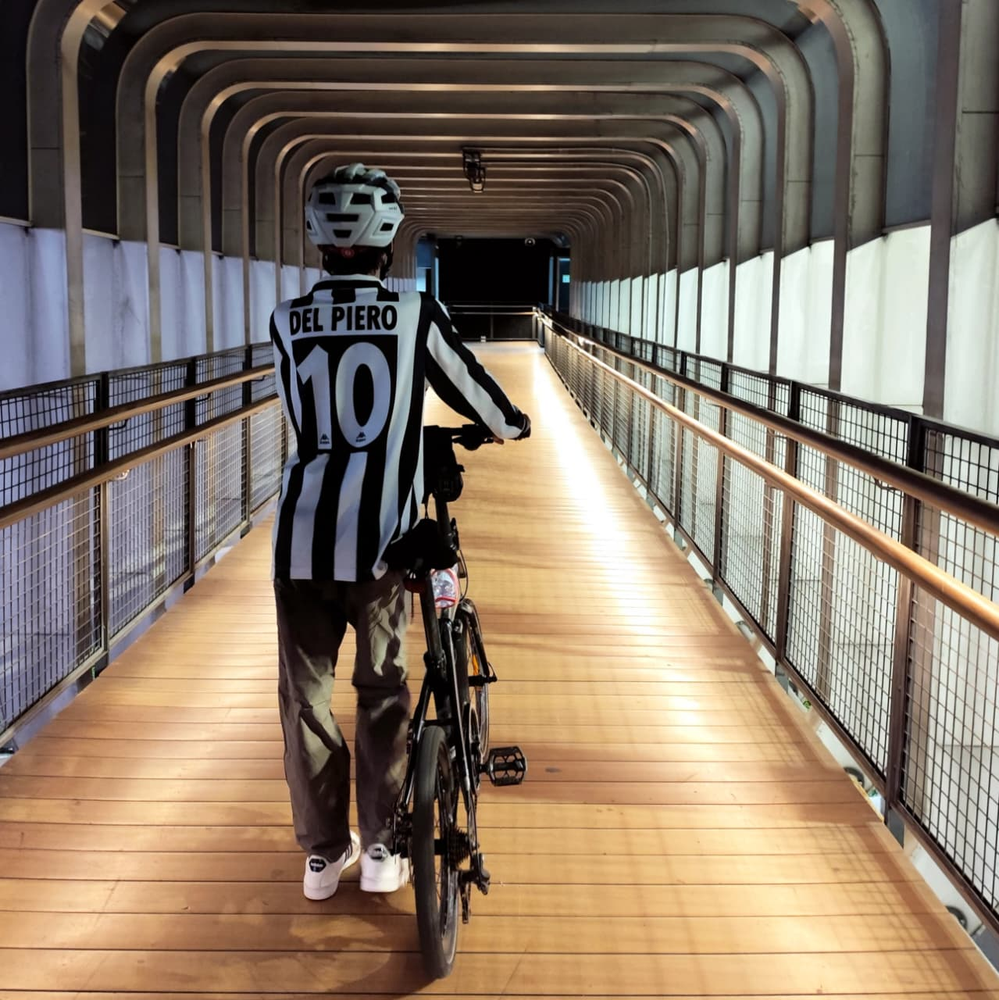
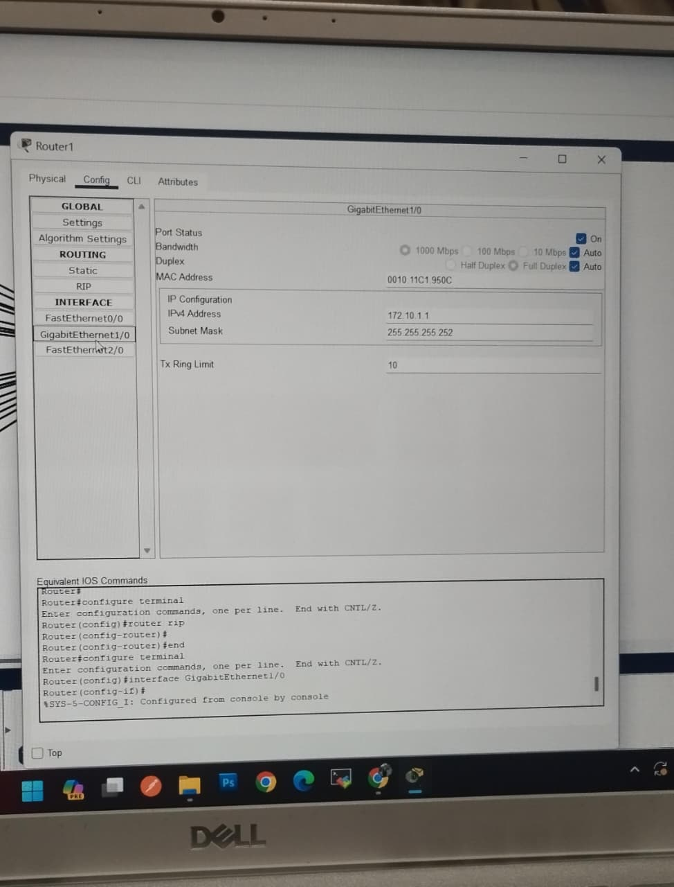
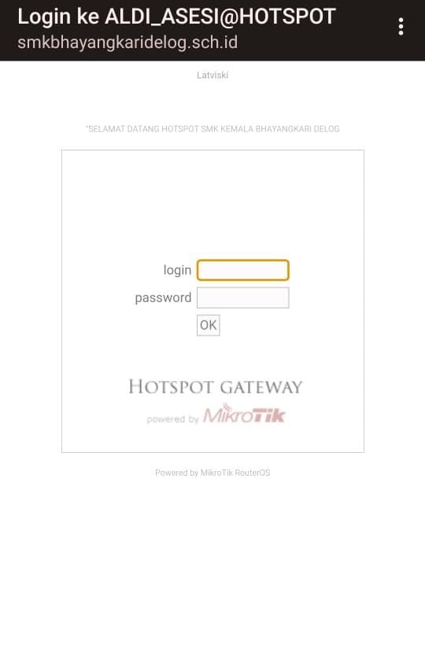
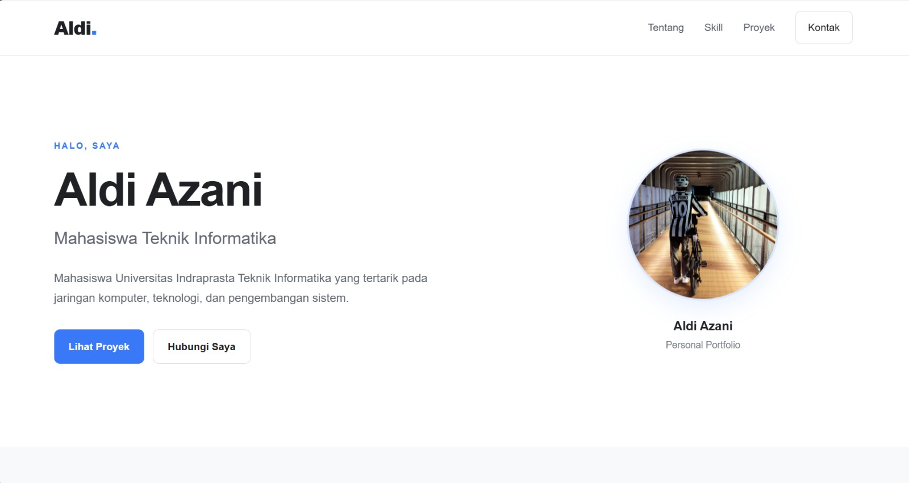

01
Jaringan Komputer
Dasar LAN, kabel straight dan crossover, serta berbagi file melalui jaringan lokal.
HALO, SAYA
Mahasiswa Universitas Indraprasta Teknik Informatika yang tertarik pada jaringan komputer, teknologi, dan pengembangan sistem.

Aldi Azani
Personal PortfolioTENTANG SAYA
Saya adalah mahasiswa Teknik Informatika yang sedang mengembangkan kemampuan di bidang teknologi informasi. Saya memiliki pengalaman belajar dalam jaringan komputer, konfigurasi perangkat jaringan, serta pembuatan website sederhana.
Saya ingin terus meningkatkan kemampuan teknis, mendapatkan pengalaman melalui proyek nyata, dan menemukan bidang teknologi yang paling sesuai dengan minat saya.
Perjalanan pendidikan dan proses saya dalam mengembangkan keterampilan di bidang teknologi.
Mempelajari dasar teknologi informasi serta praktik jaringan komputer, termasuk konfigurasi LAN dan pengelolaan perangkat jaringan.
Mendapatkan pengalaman praktik di bidang teknologi informasi, termasuk membantu administrasi jaringan, melakukan pengecekan konektivitas, serta memeriksa perangkat komputer di laboratorium.
Melanjutkan pendidikan di UNINDRA dan mengembangkan pemahaman tentang jaringan, sistem komputer, basis data, dan pemrograman.
KEMAMPUAN
Beberapa keterampilan yang pernah saya pelajari melalui perkuliahan dan praktik.
Dasar LAN, kabel straight dan crossover, serta berbagi file melalui jaringan lokal.
Praktik konfigurasi hotspot dan pengaturan akses jaringan dasar.
Mempelajari struktur halaman web dan pengaturan tampilan website.
Memeriksa masalah dasar pada komputer, koneksi, dan perangkat jaringan.
PORTFOLIO
Beberapa contoh pekerjaan yang pernah saya pelajari atau kerjakan.

Praktik pengkabelan LAN, pengaturan koneksi, dan berbagi file antar komputer.
Praktik pembelajaran

Praktik membuat hotspot dan menerapkan pembatasan akses tertentu pada jaringan.
Praktik pembelajaran

Membuat website portfolio menggunakan HTML dan CSS, lalu mempublikasikannya melalui GitHub Pages.
Proyek personal
Tertarik bekerja sama atau ingin berdiskusi? Silakan hubungi saya melalui kontak berikut.